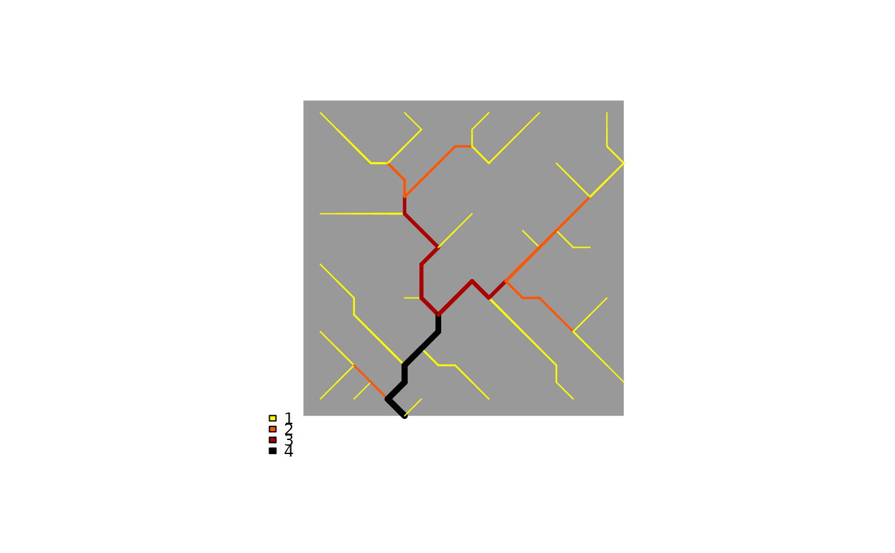
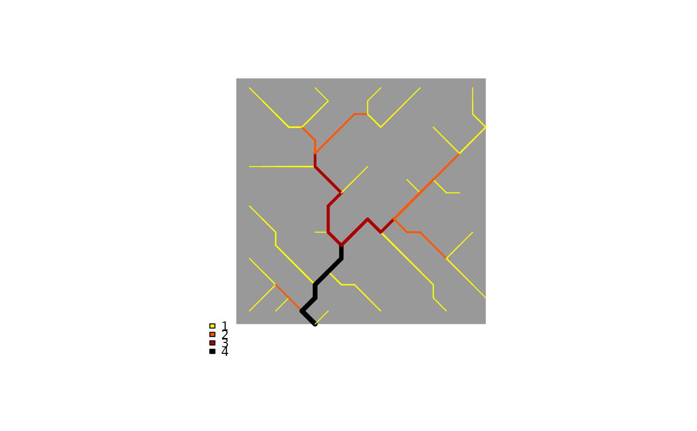

Draw thematic map on an Optimal Channel Network
draw_thematic_OCN.RdFunction that draws OCNs with color of RN or AG nodes depending on an arbitrary theme.
Usage
draw_thematic_OCN(OCN,theme=NA*numeric(OCN$AG$nNodes),
chooseAggregation = NULL,
discreteLevels = FALSE,
colLevels = NULL, cutoff = FALSE,
colPalette = colorRampPalette(c("yellow","red","black")),
exactDraw = FALSE, chooseCM = FALSE, drawNodes = FALSE,
nodeType = "upstream", nanColor = "#00BFFF",
riverColor = "#00BFFF", backgroundColor = "#999999",
addLegend = TRUE, min_lwd = 0.5, max_lwd = 5,
add = FALSE, args_imagePlot = list(), args_legend = list(),
...)Arguments
- OCN
A
riverobject as produced byaggregate_OCN. The order of arguments betweenOCNandthemecan be swapped freely.- theme
Vector (of length
OCN$AG$NnodesorOCN$RN$Nnodes) expressing the spatial field of interest. The vector can containNAandNaNvalues to identify RN or AG nodes where the theme is not defined. The order of arguments betweenOCNandthemecan be swapped freely.- chooseAggregation
Only effective if
OCN$RN$nNodes == OCN$AG$nNodes. In such case, it must be equal to either"RN"or"AG"; as a result,themewill be interpreted as a spatial field in the corresponding aggregation level. Default is"AG".- discreteLevels
Logical. If
FALSE, a continuous color scheme is used. IfTRUE, discrete color levels are applied. See alsocolLevelsand examples.- colLevels
Number of colors in the palette. If
discreteLevels == FALSE,colLevelsmust be a vector of the formc(minval, maxval)orc(minval, maxval, N_levels). The vector of breakpoints used to attributethemevalues to a given color is then defined asseq(minval, maxval, N_levels). Default isminval = min(theme[!(is.nan(theme))]),maxval = max(theme[!(is.nan(theme))]),N_levels = 1000. IfdiscreteLevels == TRUEandis.null(colLevels) == TRUE, each unique value ofthemeis attributed a different color. IfdiscreteLevels == TRUEandcolLevelsis a vector,colLevelsis used as vector of breakpoints. In this case, the number of discrete colors is equal tolength(colLevels) - 1.- cutoff
Logical. If
FALSE, nodes whosethemevalue is beyond the range established by the vector of breakpoints are attributed the color corresponding to the lowest (or highest) value in the color scheme. IfTRUE, such nodes are attributed the colorNaNcolor.- colPalette
Color palette used to display theme values.
colPaletteaccepts both functions creating color palettes and vectors of colors. In the latter case,length(colPalette)must be greater than the number of color levels. See examples below andhcl.colors.- chooseCM
Index of catchment to display (only effective if
OCN$nOutlet > 1). It can be a logical or a numeric vector. IfFALSE, all catchments are displayed. IfTRUE, the catchment with largest area is displayed. IfchooseCMis a subset of vector1:length(OCN$nOutlet), only the catchment(s) identified by the indices inchooseCMare displayed.- exactDraw
Logical. If
TRUE, the real shape of OCNs is plotted. If flow crosses a boundary, the pixel that is not contiguous to its outlet is flipped.- drawNodes
Logical. If
FALSE, the theme is directly displayed on the river network. In this case, the edge departing from a given node is displayed with the color attributed to the node. IfTRUE, the theme is displayed via markers at the locations of the nodes at the RN or AG level (depending on the length oftheme). In this case,nanColorcan be used to define the color of the river network.- nodeType
Only effective if
drawNodes == TRUEandlength(theme) == OCN$RN$nNodes. Can assume values"upstream"or"downstream". If"upstream", nodes are drawn at the upstream ends of the corresponding edges (i.e. at the coordinates defined byOCN$AG$X,OCN$AG$Y). If"downstream", nodes are drawn at the downstream ends of the corresponding edges (i.e. at the coordinates defined byOCN$AG$XReach,OCN$AG$YReach).- nanColor
Color attributed to RN or AG nodes whose theme value is
NAorNaN.- riverColor
Only effective if
drawNodes == TRUE. Color used to display the OCN below the nodes.- backgroundColor
Color used in the background of the figure. It can be either a single value, or a vector with number of components equal to
length(chooseCM). Iflength(backgroundColor) == length(chooseCM), each color is used to identify a different catchment selected inchooseCM(corresponding to the respective outlet). If insteadlength(chooseCM) > 1andlength(backgroundColor) == 1, all catchments are colored with the samebackgroundColor.- addLegend
Logical. If
TRUE, add legend to the plot. If alsodiscreteLevels = FALSE,image.plotis used to display the legend, which appears as a colorbar; as a result, elements (e.g. node coordinates) subsequently plotted of on top of the 2D elevation map might be wrongly positioned.- min_lwd, max_lwd
Minimum and maximum values of line width used to display the OCN (actual line width is proportional to the square root of drainage area).
- add
Logical. If
TRUE, add to an already existing plot. Taken asFALSE(with a warning if a different value is supplied) if no graphics device is open.- args_imagePlot
Only effective if
addLegend = TRUEanddiscreteLevels = FALSE. List of arguments passed toimagePlotfor drawing a continuous legend. For example, argumentsmallplotcan be used to specify the plot coordinates for the legend.- args_legend
Only effective if
addLegend = TRUEanddiscreteLevels = TRUE. List of arguments passed tolegendfor drawing a discrete legend.- ...
Further arguments to be passed to
plot.
Details
This function can be used to show how a certain spatial field varies along the river network.
Default plot options. By default, it is set asp = 1, xlab = "", ylab = "". If at least one between xlim and ylim is specified by the user, the default for axes is TRUE, and is FALSE if not. Specifying xlim and ylim helps zoom into a portion of the river network; however, due to the default asp = 1, the displayed region might be larger than what is expected if the ranges of xlim and ylim are different. To avoid this, set asp = NA (at the cost of producing a deformed river network).
Adding scale bar and north arrow. Scale bar and north arrow can be added via terra's functions sbar and north, respectively. However, note that arguments d and xy must be specified by the user (because no rast object is plotted). See example 5.
Examples
# 1a) Six different ways to display contributing area at the AG level
OCN <- aggregate_OCN(landscape_OCN(OCN_20), thrA = 4)
old.par <- par(no.readonly = TRUE)
par(mfrow=c(2,3), oma = c(0, 0, 3, 0))
draw_thematic_OCN(OCN$AG$A, OCN, colPalette = hcl.colors)
title("Continuous levels \n Colors on edges")
draw_thematic_OCN(OCN$AG$A, OCN, discreteLevels = TRUE,
colPalette = hcl.colors)
title("Discrete, unique levels \n Colors on edges")
draw_thematic_OCN(OCN$AG$A, OCN, discreteLevels = TRUE,
colLevels = c(1, 10, 50, 100, 500),
colPalette = hcl.colors)
title("Discrete, user-defined levels \n Colors on edges")
draw_thematic_OCN(OCN$AG$A, OCN, drawNodes = TRUE,
colPalette = hcl.colors)
title("Continuous levels \n Colors on edges")
draw_thematic_OCN(OCN$AG$A, OCN, discreteLevels = TRUE,
drawNodes = TRUE, colPalette = hcl.colors)
title("Discrete, unique levels \n Colors on nodes")
draw_thematic_OCN(OCN$AG$A, OCN, discreteLevels = TRUE,
drawNodes = TRUE, colLevels = c(1, 10, 50, 100, 500),
colPalette = hcl.colors)
title("Discrete, user-defined levels \n Colors on nodes")
mtext("Six different ways to display contributing area [no. pixels]", outer = TRUE, cex = 1.5)
par(old.par)
# 1b) Same as above, but use different colLevels, cutoff combinations
# with DiscreteLevels = FALSE
old.par <- par(no.readonly = TRUE)
par(mfrow=c(1,2))
draw_thematic_OCN(OCN$AG$A, OCN, drawNodes = TRUE,
colLevels = c(0, 200, 1000), colPalette = hcl.colors)
title("All nodes with A > 200 pixels \n are displayed in yellow")
draw_thematic_OCN(OCN$AG$A, OCN, drawNodes = TRUE,
nanColor = "#00000000", colLevels = c(0, 200, 1000),
cutoff = TRUE, colPalette = hcl.colors)
title("All nodes with A > 200 pixels \n are treated as NaN")
 par(old.par)
if (FALSE) {
# 2) Display distance to outlet (at the RN level) along the main stem
# of an OCN
OCN <- aggregate_OCN(landscape_OCN(OCN_250_T)) # this takes some seconds
OCN <- paths_OCN(OCN, includePaths = TRUE) # this takes some seconds
distanceToOutlet <- OCN$RN$downstreamPathLength[,OCN$RN$outlet]
farthestNode <- which(distanceToOutlet == max(distanceToOutlet))
mainStem <- OCN$RN$downstreamPath[[farthestNode]][[OCN$RN$outlet]]
theme <- rep(NaN, OCN$RN$nNodes)
theme[mainStem] <- distanceToOutlet[mainStem]
draw_thematic_OCN(theme, OCN)
title("Distance to outlet along the main stem [pixel units]")
}
# 3) Show an OCN without a theme
OCN <- aggregate_OCN(landscape_OCN(OCN_20), thrA = 4)
draw_thematic_OCN(OCN)
draw_thematic_OCN(OCN, xlim=c(3,8), ylim=c(0,5)) # zoom closer at the outlet
# 4) Adjust legend location
draw_thematic_OCN(OCN, OCN$AG$A,
args_imagePlot = list(smallplot = c(0.1, 0.11, 0.1, 0.3)))
draw_thematic_OCN(OCN, OCN$AG$streamOrder,
discreteLevels = TRUE, args_legend = list(x = -2, y = 1))

# 5) add thematic OCN on top of map and show scale bar and north arrow
draw_elev2D_OCN(OCN)
draw_thematic_OCN(OCN, OCN$AG$slope, backgroundColor = NULL,
add = TRUE, colPalette = hcl.colors(1000, "Grays", rev = TRUE),
args_imagePlot = list(smallplot=c(0.05,0.07,0.1,0.9)))
# now add scale bar and north arrow
library(terra)
#> terra 1.7.55
# sbar() # this would throw an error
# north()# this would throw an error
sbar(d=1, xy=c(min(OCN$FD$X), min(OCN$FD$Y)-1)) # this works
north(d=1, xy=c(max(OCN$FD$X)+1, max(OCN$FD$Y))) # this works
par(old.par)
if (FALSE) {
# 2) Display distance to outlet (at the RN level) along the main stem
# of an OCN
OCN <- aggregate_OCN(landscape_OCN(OCN_250_T)) # this takes some seconds
OCN <- paths_OCN(OCN, includePaths = TRUE) # this takes some seconds
distanceToOutlet <- OCN$RN$downstreamPathLength[,OCN$RN$outlet]
farthestNode <- which(distanceToOutlet == max(distanceToOutlet))
mainStem <- OCN$RN$downstreamPath[[farthestNode]][[OCN$RN$outlet]]
theme <- rep(NaN, OCN$RN$nNodes)
theme[mainStem] <- distanceToOutlet[mainStem]
draw_thematic_OCN(theme, OCN)
title("Distance to outlet along the main stem [pixel units]")
}
# 3) Show an OCN without a theme
OCN <- aggregate_OCN(landscape_OCN(OCN_20), thrA = 4)
draw_thematic_OCN(OCN)
draw_thematic_OCN(OCN, xlim=c(3,8), ylim=c(0,5)) # zoom closer at the outlet
# 4) Adjust legend location
draw_thematic_OCN(OCN, OCN$AG$A,
args_imagePlot = list(smallplot = c(0.1, 0.11, 0.1, 0.3)))
draw_thematic_OCN(OCN, OCN$AG$streamOrder,
discreteLevels = TRUE, args_legend = list(x = -2, y = 1))

# 5) add thematic OCN on top of map and show scale bar and north arrow
draw_elev2D_OCN(OCN)
draw_thematic_OCN(OCN, OCN$AG$slope, backgroundColor = NULL,
add = TRUE, colPalette = hcl.colors(1000, "Grays", rev = TRUE),
args_imagePlot = list(smallplot=c(0.05,0.07,0.1,0.9)))
# now add scale bar and north arrow
library(terra)
#> terra 1.7.55
# sbar() # this would throw an error
# north()# this would throw an error
sbar(d=1, xy=c(min(OCN$FD$X), min(OCN$FD$Y)-1)) # this works
north(d=1, xy=c(max(OCN$FD$X)+1, max(OCN$FD$Y))) # this works